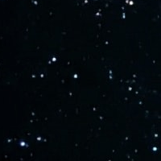
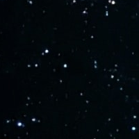

In this article, we will embark on an interplanetary journey into the world of object localization using Deep Learning. Object localization is computer vision task that involves identifying and localizing objects within an image or video. Convolutional Neural Networks (CNN) have played a significant role in advancing object detection algorithms by enabling accurate and efficient detection of objects in real-time.
As young AIpprentices we will delve into the fundamental concepts of object localization and explore a practical implementation using tensorflow to train a model capable of identifying and pinpointing objects of interest within complex space imagery. Then embracing the power of tranfer learning we will fine-tune master pre-trained models and achieve remarkable accuracy and efficiency in detecting and localizing objects such as starships, planets, and other celestial elements.
May the farce be with us!
Content
Episode I: The Tensor Force Awakens
Episode II: The Attack of the YOLOv5
Episode III: The Revenge of the Transformers
Source Code
Episode I: The Tensor Force Awakens
This first approach is based on the free coursera project Object Localization with Tensorflow which provides a very nice introduction to many practical aspects of tensorflow and image processing using the library pillow. Here we briefly review some key points of the implementation, namely the dataset creation, the model definition and training.
Create a dataset
Our dataset is made of images displaying cartoon planets or objects superimposed over a random celestial background, together with labels corresponding to the class of the object and a bounding box. We consider 12 different objects, class_id = 0..11, and a square bounding box defined by its upper left corner (x,y) and edge length h:
image:  + 
+ 
label: [class_id,x,y,h]
We are therefore considering a supervised learning problem where the data can be displayed as in picture below. During training the GPU is fed using a DataLoader which shuffles and batches the data appropriately.Convolutional Neural Network
Convolutional Neural Networks (CNNs) have revolutionized the field of computer vision, allowing machines to perceive and understand images with remarkable accuracy. Inspired by the visual cortex of living organisms, CNNs excel at learning hierarchical representations of visual data through convolutional and pooling layers. These layers extract local features, capture spatial relationships, and progressively aggregate information to form a rich understanding of the input.
Here we consider the following VGG like architecture with batch normalization:
# Define the input layer
input_ = Input(shape=(im_size, im_size, 3), name='image')
# Start building the model architecture
x = input_
for i in range(0, 5):
n_filters = 2**(4 + i) # Calculate the number of filters for each convolutional layer
x = Conv2D(n_filters, 3, activation='relu')(x) # Add a convolutional layer with ReLU activation
x = BatchNormalization()(x) # Add batch normalization to normalize the activations
x = MaxPool2D(2)(x) # Add a max pooling layer with pool size of 2x2
x = Flatten()(x) # Flatten the output from the convolutional layers
x = Dense(128, activation='relu')(x) # Add a dense layer with ReLU activation
class_out = Dense(n_objects, activation='softmax', name='class_out')(x) # Output layer for class prediction
box_out = Dense(3, name='box_out')(x) # Output layer for bounding box prediction
# Create the model with input and output layers
model = tf.keras.models.Model(input_, [class_out, box_out])
Note the two outputs: class_out to perform the object classification, box_out to handle the bounding box.
Training
The training loop combines essential techniques for optimal performance. We use categorical cross-entropy as the loss function for multi-class classification and IoU as the metric to evaluate bounding box predictions.
A learning rate scheduler dynamically adjusts the learning rate, while early stopping prevents overfitting. TensorBoard support enables visualizing and monitoring training progress. Together, these techniques form a powerful framework for efficient and effective object detection training.
Episode II: The Attack of the YOLOv5
In this chapter we will use transfer learning to use the power of YOLOv5, a state-of-the-art object detection model known for its speed and accuracy.
Built upon the You Only Look Once (YOLO) concept, YOLOv5 introduces a streamlined architecture consisting of a backbone network, neck network, and detection head.
It is trained on large-scale datasets like COCO and utilizes anchor boxes for bounding box predictions. YOLOv5 leverages advanced techniques such as multi-scale training, data augmentation, and focal loss to improve object detection performance.
With its efficient architecture and comprehensive training pipeline, YOLOv5 has become a popular choice for real-time object detection tasks.
The following is based on the article Transfer Learning In Simple Steps Without Losing Your Mind. Except for the installation process for which you choose to work with a docker container, most of the work consists in preparing the data for the training. The chapter will be decomposed into data preprocessing, YOLOv5 install and training.
Data preprocessing
The expected folder structure for YOLOv5 includes images and labels organized in the following format:data/
├── images
│ ├── test
│ ├── train
│ └── val
└── labels
├── test
├── train
└── val
5 0.25 0.63 0.40 0.37corresponding to the class id, 5 here, and the characteristics of the bounding box, here (0.25,0.63) for its center coordinates and (0.40,0.37) for its width and height. Please refer to the notebook available in the source code section for the scripts to generate this file structure.
The YOLOv5 training script also requires a configuration yaml file which in our case in named spacequest.yaml and contains the following information
# Dataset paths relative to the yolov5 folder
train: AIpprenticeChronicles/EpisodeII/data/images/train
val: AIpprenticeChronicles/EpisodeII/data/images/val
test: AIpprenticeChronicles/EpisodeII/data/images/test
# Number of classes
nc: 12
# Class names ...
names: ['Sun', 'Earth', 'Mars', 'Venus', 'Jupyter', 'Mercury', 'Saturn', 'Neptune', 'Uranus', 'Asteroid','Black Hole','Star Destroyer']
YOLOv5 install
here we choose to work with YOLOv5 within a docker container, to pull the image and start a container use the following bash command from the folder containing the folder structure and yaml file described above
t=ultralytics/yolov5:latest && \
docker pull $t && \
docker run -it --ipc=host --gpus all -p 8888:8888 -v $PWD:/usr/src/app $t
If the image has already been pulled the container can be launched using the command
docker run -it --ipc=host --gpus all -p 8880:8888 -v $PWD:/usr/src/app ultralytics/yolov5:latest
From the container prompt jupyter can be started using the command
jupyter notebook --ip 0.0.0.0 --no-browser --allow-root --port=8888Once completed you should have access to a notebook with YOLOv5 and full GPU support.
training and prediction
Here we will use the smallest YOLOv5 model yolov5s and we will freeze the backbone, responsible for the features extraction, and only train the detection head. Inspecting the network architecture, given in the file /usr/src/app/models/yolov5s.yaml in the container, reveals that the backbone network corresponds to the ten fist layers. Given this information training YOLOv5 only amounts to running the following command from the jupyter notebook
!python yolov5/train.py --data spacequest.yaml --weights yolov5s.pt --epochs 100 --batch 4 --freeze 10
Training can be monitored using tensorboard available in the docker image. Last and best model weights are stored to be used in prediction mode. Generating an example image the a detection prediction can be performed using the command
!python /usr/src/app/detect.py --data spacequest.yaml --weights /usr/src/app/runs/train/exp/weights/best.pt --source example.png
Here we test on an example image with and and without fine-tuning: on the first image before fine-tuning YOLOv5 detect the cartoon planet but classifies it as a stop sign, on the second image after fine-tuning YOLOv5 correctly classify the planet as Mars.
Episode III: The Revenge of the Transformers
In this last section we will again use transfer learning with a transformer model. Transformers have revolutionized the field of natural language processing (NLP) and have found their way into various applications, including object detection.
Following the object detection tutorial at huggingface, we use the Detection Transformer (DETR) model. DETR is a state-of-the-art object detection model that combines the power of transformers with the task of object detection It consists of two main components: a CNN backbone and a transformer-based detection head. The backbone CNN extracts image features, which are then passed to the transformer-based detection head.
As in the previous section, most of the work here consists in prepraring the dataset to fit the model requirements and then follow the huggingface transformer tutorial to complete the process. Specifically, we use the pre-trained model facebook/detr-resnet-50 available at huggignface hub. The model was train on the COCO 2017 object detection dataset and we need to process our data to follow the COCO format to fine-tune the model.